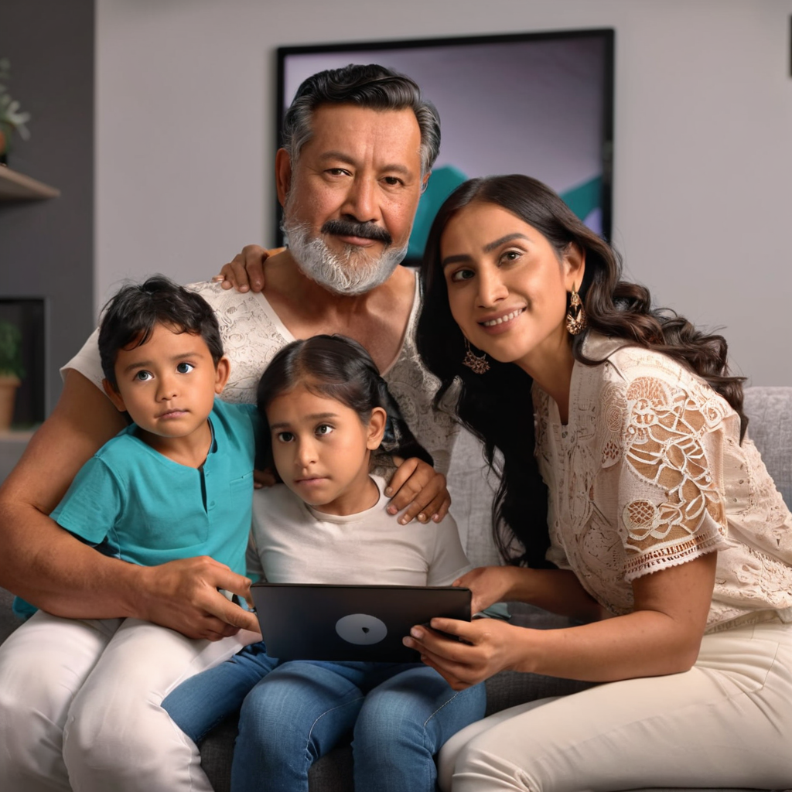

Guía completa: mejor internet para familias grandes en México 2026
El mejor internet para familias grandes en México 2026 ya no se trata solo de velocidad, sino de estabilidad, cobertura interna, bajo ping para gaming y capacidad para soportar docenas de dispositivos simultáneos. En este 2026, con el aumento de teletrabajo, clases en línea, streaming en 4K/8K y gaming en tiempo real, los hogares con 4 o más personas necesitan soluciones reales, no promesas vacías. Izzi, Totalplay, Infinitum, Megacable y Dish han actualizado sus ofertas para competir en rendimiento, precio y servicios extras. Si eliges mal, podrías terminar con caídas constantes, latencia alta y facturas imprevistas por datos excedidos.
En esta guía aprenderás cuáles son los proveedores con mejor relación calidad-precio para hogares grandes, qué velocidad conviene según el número de dispositivos, cómo reducir el ping para gaming sin gastar de más, y qué detalles técnicos (como fibra óptica hasta el hogar o dual-band Wi-Fi 6) marcan la diferencia real. También te revelamos precios oficiales al mes de 2026 (sin promociones ocultas), comparativas puntuales y un paso a paso para elegir sin caer en trampas de contrato.
- Izzi ofrece el mejor equilibrio entre precio y rendimiento con planes desde $349 MXN, ideal para hogares con 4–6 personas y uso mixto.
- Totalplay es la mejor opción para gaming y streaming 8K, con fibra óptica dedicada y ping bajo (20–35 ms), pero sus planes inician en $399 MXN.
- Infinitum (Telmex) destaca por cobertura nacional y soporte técnico presencial, aunque su red Wi-Fi 5 en algunos hogares carece de cobertura interna óptima.
- Megacable ofrece paquetes con TV e internet integrados desde $399 MXN, con buena estabilidad en sureste y norte del país.
¿Por qué el internet para familias grandes cambió en 2026?

En 2026, un hogar promedio en México tiene ya 12–18 dispositivos conectados: smartphones, tablets, laptops, smart TVs, consolas, IoT (asistentes de voz, cámaras, enchufes inteligentes), e incluso routers mesh adicionales. Antes, 200–300 Mbps bastaban; hoy, sin 500 Mbps mínimos, los conflictos de ancho de banda son cotidianos: el Zoom se congela mientras los niños ven YouTube y alguien intenta descargar una actualización de juego.
Además, el gaming en línea ha explotado: 43% de los hogares mexicanos tienen al menos un jugador activo (INEGI, 2025), y el ping bajo ya no es un lujo — es la diferencia entre ganar o perder en partidas en vivo. Por eso, la fibra óptica hasta el hogar (FTTH) dejó de ser opcional y se volvió esencial para evitar caídas y latencia.
Como resultado, los proveedores lanzaron planes específicos para hogares grandes en 2026: más canales de Wi-Fi (5 GHz + 6 GHz), routers con QoS (Quality of Service) para priorizar videoconferencias o juegos, y sin datos excedido

Comparativa detallada: precios y prestaciones reales (2026)
Precios reales de los proveedores en 2026
En 2026, los precios de internet residencial en México se han estandarizado, pero con matices clave. Aquí una comparación de planes reales (sin promociones por 3 meses o precios de bienvenida):
| Proveedor | Plan básico (300–500 Mbps) | Plan medio (500 Mbps–1 Gbps) | Plan máximo (1 Gbps+) | Rango de ping (ms) | Router incluido |
|---|---|---|---|---|---|
| Izzi | $349 MXN (300 Mbps) | $599 MXN (800 Mbps) | $899 MXN (1 Gbps) | 25–40 ms | Wi-Fi 6 (Ixion Pro) |
| Totalplay | $399 MXN (500 Mbps) | $699 MXN (1 Gbps) | $1,199 MXN (2 Gbps) | 20–35 ms | Wi-Fi 6E (FiberBox 2.0) |
| Infinitum (Telmex) | $389 MXN (300 Mbps) | $599 MXN (600 Mbps) | $999 MXN (1 Gbps) | 30–50 ms | Wi-Fi 5 (HGU) |
| Megacable | $399 MXN (500 Mbps) | $649 MXN (800 Mbps) | $899 MXN (1 Gbps) | 28–45 ms | Wi-Fi 6 (SmartRouter) |
| Dish (satelital) | $599 MXN (100 Mbps) | $799 MXN (200 Mbps) | $999 MXN (300 Mbps) | 60–120 ms | Router básico (no apto para gaming) |
Características clave para familias grandes
- Cobertura interna con mesh automático: Totalplay e Izzi incluyen routers con módulo mesh en sus planes de 500 Mbps+, lo que evita zonas muertas en casas de 2 pisos.
- Priorización de dispositivos (QoS): Totalplay e Izzi permiten asignar prioridad a consolas (PlayStation, Xbox, Nintendo Switch) o videollamadas en Zoom/Teams.
- Sin datos excedidos: Todos los planes de 500 Mbps+ de Izzi, Totalplay, Infinitum y Megacable incluyen tráfico ilimitado — crucial si hay niños viendo YouTube o Netflix en 4K.
- Soporte técnico 24/7 con técnico en casa: Infinitum destaca en esto por su red física, pero Totalplay y Izzi han reducido tiempos de respuesta a menos de 24 horas en zonas urbanas.
Si quieres profundizar en la comparativa más exacta entre Izzi y Totalplay —los dos líderes en rendimiento para gaming—, revisa nuestra guía detallada en Izzi vs Totalplay 2026: ¿cuál gana para gaming y streaming?
Cómo elegir tu plan: 5 pasos prácticos para familias grandes
- Cuenta tus dispositivos activos: Anota cuántos móviles, laptops, TVs, consolas y objetos IoT (luces, cámaras, termostatos) están conectados al mismo tiempo. Si son más de 10, busca planes de 500 Mbps a 1 Gbps.
- Verifica la fibra óptica hasta tu casa (FTTH): En 2026, la fibra sí importa. Infinitum y Megacable aún usan HFC (coaxial) en algunas colonias, lo que limita el ping. Pide al representante que confirme: “¿Es fibra óptica hasta el hogar o solo hasta el barrio?”. Si no es FTTH, evita planes >300 Mbps.
- Compara el ping real en tu zona: Usa Speedtest o Fast.com en horas pico (7–10 pm) y anota el ping. Para gaming en línea (FIFA, Valorant, Apex), busca menos de 40 ms. Totalplay suele liderar aquí.
- Revisa el router incluido: Si tienes más de 6 dispositivos en 2 pisos, exige router con Wi-Fi 6 o Wi-Fi 6E y módulo mesh. Izzi e Izzi e Totalplay ya lo incluyen en sus planes de $599 MXN+; Infinitum lo vende por separado.
- Lee la letra pequeña del contrato: Algunos planes prometen “hasta 1 Gbps”, pero con un router viejo te dan 600 Mbps reales. Pide por escrito la velocidad garantizada y el tipo de router.
Preguntas frecuentes
¿Cuál es el mejor internet para familias grandes con niños que estudian en línea?
Para familias con niños en educación remota, prioriza la estabilidad sobre la velocidad. Izzi ($599 MXN/800 Mbps) o Infinitum ($599 MXN/600 Mbps) son ideales: ambos incluyen routers con QoS para priorizar Zoom o Google Meet, y su soporte técnico rápido evita interrupciones en clases. Evita planes satelitales como Dish por su alto ping (60–120 ms), que causa eco y retrasos en videollamadas.
¿Qué plan conviene si hay gamers en casa?
Para internet gaming para familias México, Totalplay ($699 MXN/1 Gbps) es la mejor opción: su red está optimizada para gaming, con ping de 20–35 ms y priorización automática en su app. Además, incluye acceso gratis a su plataforma de streaming con menos anuncios. Si el presupuesto es ajustado, Izzi ($599 MXN/800 Mbps) ofrece un ping casi tan bajo (25–40 ms) y es más barato.
¿Vale la pena pagar más por 1 Gbps en lugar de 500 Mbps?
Sí, si tienes 5+ personas usando simultáneamente dispositivos de alto consumo (streaming 4K, gaming, videollamadas). Aunque no uses todo el ancho de banda, la diferencia real está en la latencia y la estabilidad: los planes de 500 Mbps suelen saturarse con 8–10 dispositivos activos, mientras los de 1 Gbps mantienen velocidades estables. En 2026, el margen entre $599 y $899 MXN/1 Gbps es pequeño comparado con el estrés de caídas constantes.
¿Es mejor fibra óptica o 5G para hogares grandes?
Para fibra óptica para hogares con muchos dispositivos México, la fibra sigue siendo superior. El 5G residencial (como el de AT&T o Telcel) tiene mejor latencia que el satelital, pero su rendimiento cae en zonas con mucho tráfico celular o paredes gruesas. La fibra ofrece velocidad constante, sin interferencias, y es esencial para redes Wi-Fi mesh internas. En 2026, solo Totalplay, Izzi, Infinitum y Megacable ofrecen fibra FTTH confiable en zonas urbanas.
¿Puedo cambiar de proveedor sin costo si no me gusta?
En 2026, la Ley Federal de Telecomunicaciones exige que los proveedores ofrezcan una ventana de 15 días de prueba gratuita con devolución total. Si detectas caídas frecuentes, ping alto o mala cobertura interna, solicita la baja antes de los 15 días. Totalplay e Izzi lo hacen sin multas ni trámites; Infinitum puede cobrar $299 MXN si ya instalaste el router.
Conclusión
El mejor internet para familias grandes en México 2026 no es uno solo: depende del número de personas, hábitos de uso y tu ciudad. Pero hay patrones claros:
- Para presupuesto ajustado y uso mixto (3–5 personas): Izzi $599 MXN/800 Mbps — mejor equilibrio precio/rendimiento.
- Para gaming y streaming 8K (con gamers o amantes del cine): Totalplay $699 MXN/1 Gbps — ping más bajo y router Wi-Fi 6E.
- Para cobertura nacional y soporte presencial (zonas rurales o semiurbanas): Infinitum $599 MXN/600 Mbps — aunque revisa si tienes fibra FTTH en tu colonia.
Recuerda: no compres por velocidad nominal, sino por rendimiento real en tu casa. Usa herramientas como nuestra guía completa de pruebas de red en México 2026 para validar ofertas antes de firmar.
¿Listo para cambiar? Compara planes ahora en la sección de comparación de internet y encuentra tu plan ideal con filtros reales: ping, dispositivos, y ciudad.